{kind=link}
{kind=link}
[1] 1988Introduction to R & RStudio
Week 1 - Lecture 4 & Lab 0
Hello R, This is Me!
Today…
In this lecture, we will…
- learn what is R, RStudio and Quarto Document
- create A STAT-218 Folder in Your Desktop
- create A New Quarto Document
- save this document to your STAT-218 Folder
- save this document to your STAT-218 Folder
- fill out the document
- have first coding experience by
- saying Hello World!
- creating an Object
- running some functions
- saying Hello World!
- have first coding experience by
- learn How to Get Help
- render The First PDF
R and RStudio

Hadley Wickham and others at RStudio, CC BY-SA 4.0, via Wikimedia Commons

RStudio, Inc., Public domain, via Wikimedia Commons
R is a computer language.
R is an environment for statistical computing and graphics.
- R provides a wide variety of statistical and graphical techniques.
R is a free open source software
- RStudio is an integrated development environment (IDE) for R
- RStudio has four main panes each in a quadrant of your screen
What Can We Do with RStudio?
- Everything we need to do for this class and beyond!
What is Quarto Document?
Quarto is…
- an open-source scientific and technical publishing system
- a multi-language, next-generation version of R Markdown.
- enabling you to combine code and text to create rich outputs, like reports and presentations. (like an advanced version of a word processing tool)
Important
- R is the programming language for statistical computing
- RStudio is the IDE that facilitates R programming
- Quarto document is a document type that combines text and code
- In short, we will create Quarto documents in RStudio and we will combine text and R codes in that Quarto document to create our lab reports.
Today’s Tasks
Task 1: Create A Folder
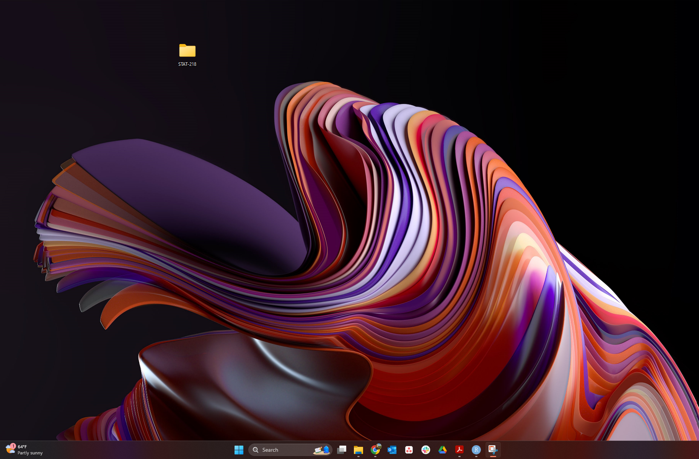Task 2: Creating a Quarto Document
Tip
You can create your own Quarto document by clicking File > New File > Quarto Document
Let’s try to create our first Quarto document!
WARNING! I use Windows, you may use Mac or Linux or online version of R. Thus, your screen might look a bit different than mine.
Task 2: Creating and Saving a Quarto Document
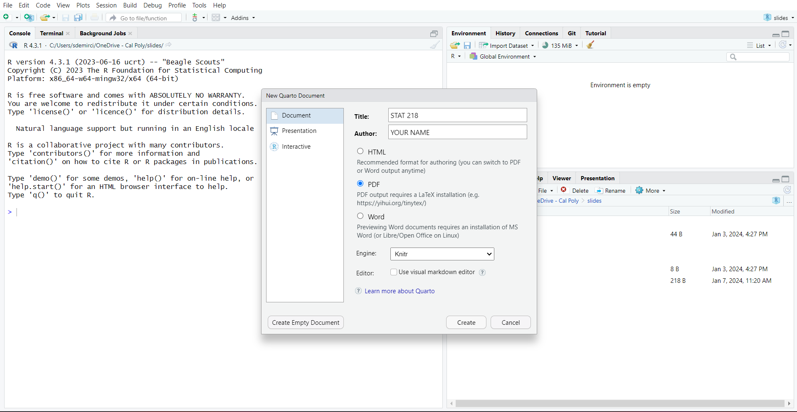
How to Create a New Quarto Document
Task 2: Creating and Saving a Quarto Document
You can save your own Quarto document by clicking
File > Save
After that, YOU NEED TO FIND YOUR FOLDER TO SAVE YOUR FILE.
Panes in RStudio
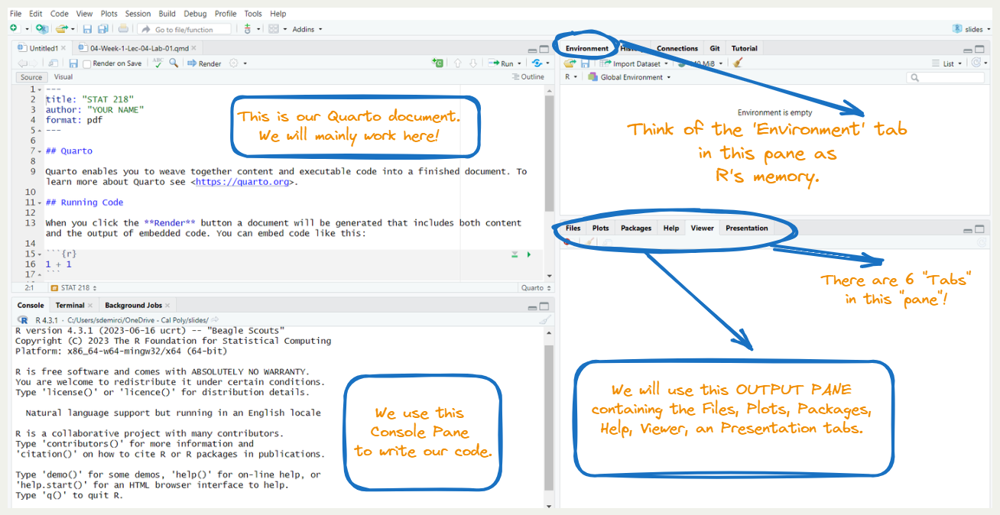A Closer Look into the Quarto Document
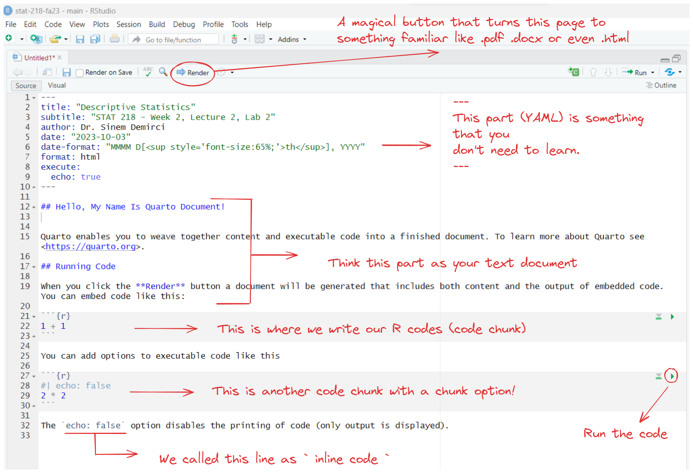Task 3: Play with Your First Quarto Document
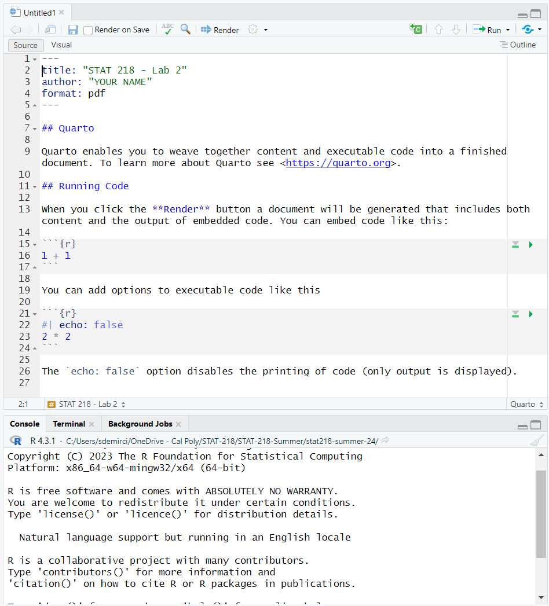Delete The Default Content
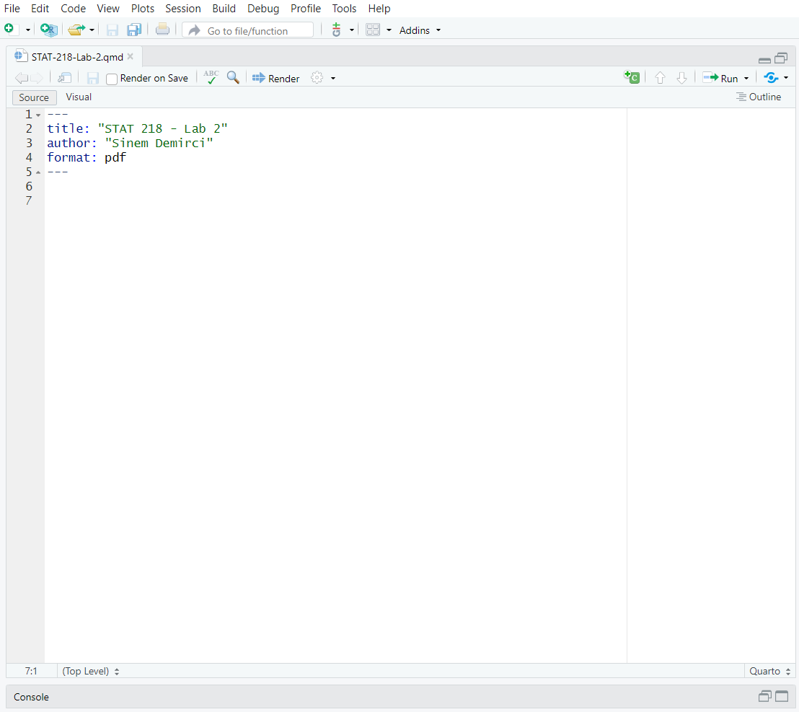Add Headings and Text
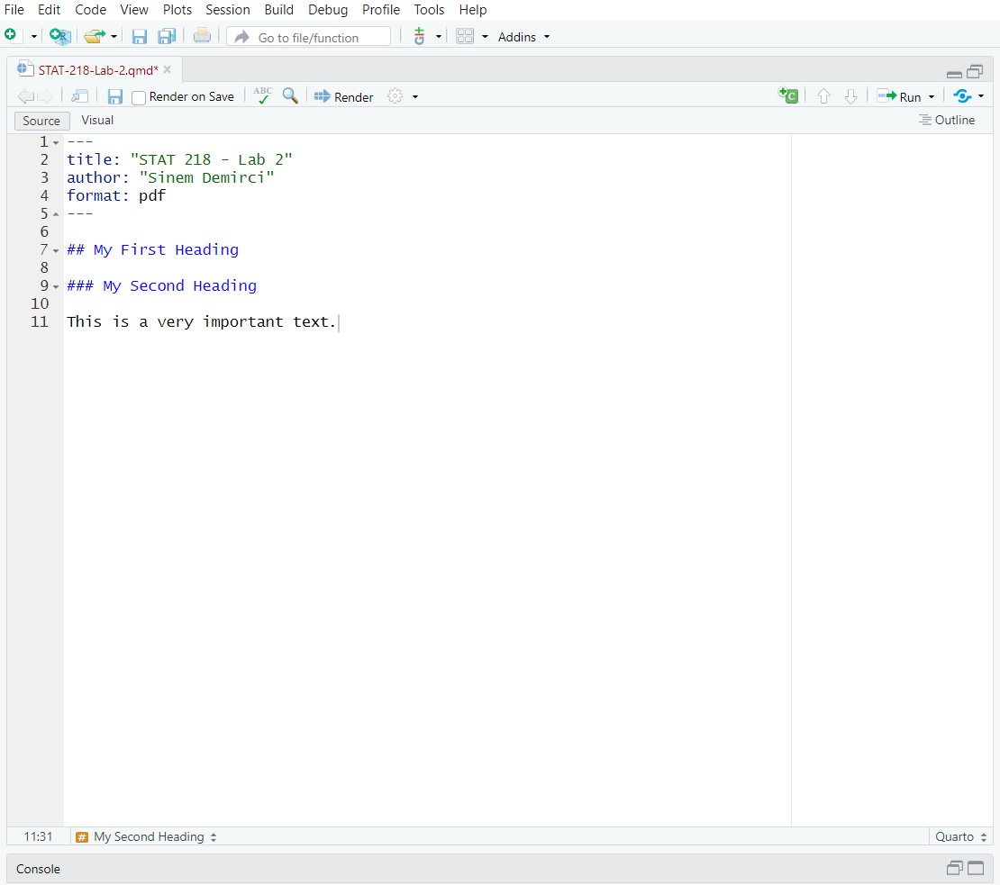Add A Code Chunk
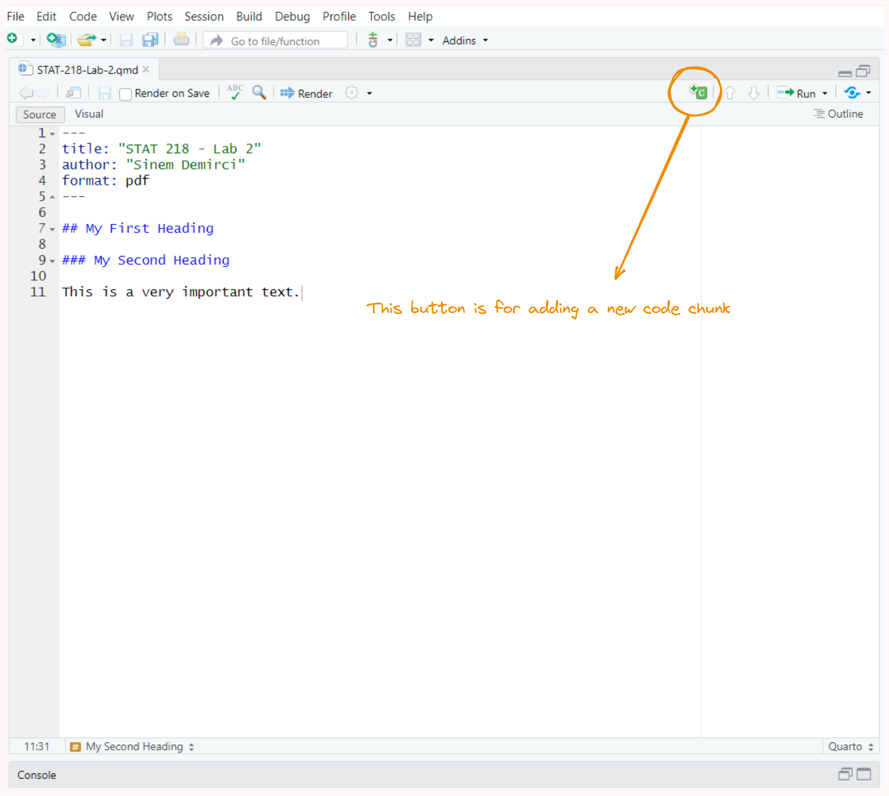Add This Simple Code
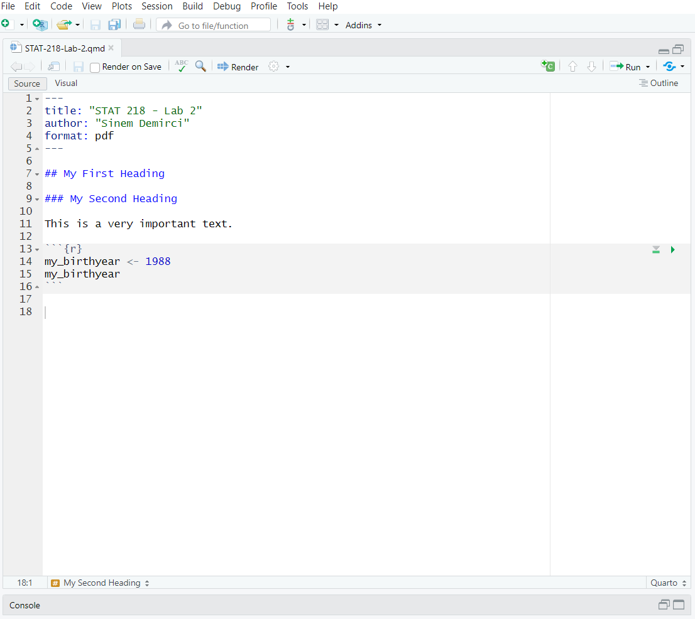Creating An Object
We create an object by using “<-” called as “Object Assignment Operator”
| Windows | Mac | |
|---|---|---|
| Shortcut | Alt and - | Option and - |
Run the Code Chunk
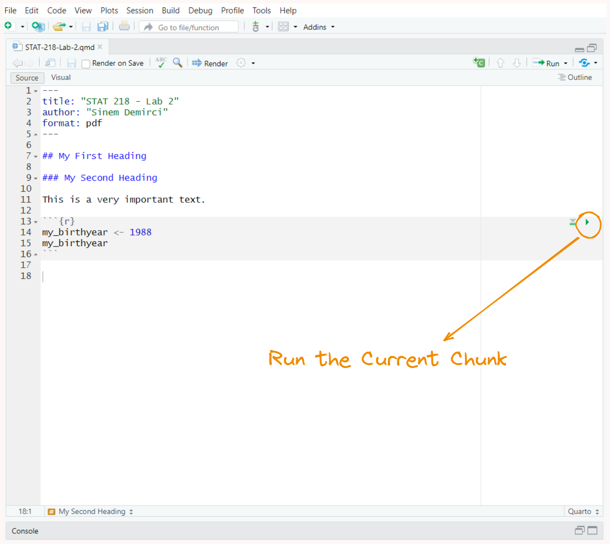Say, Hello World!
- hello world is a phrase that most programmers use when they first begin programming in any language.
- Let’s write our first “hello world!” together.
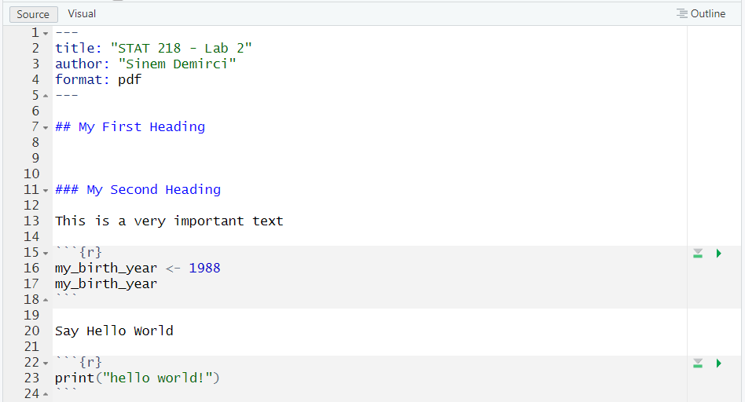
Vocabulary Section
do() is a function;
something is the argument of the function.
do() is a function;
something is the first argument of the function;
colorful is the second argument of the function.
R ignores comments if you put # like above
I love Dr. Dogucu’s teaching strategy to teach students the basics of coding. This is how she explains the idea of coding. I am using some of her strategies during this session.
Check Your Document Before Rendering
Rendering a PDF Document
The Quarto document that we created is a source file.
By rendering this, will have a different output file (e.g., PDF)
Rendering a PDF Document
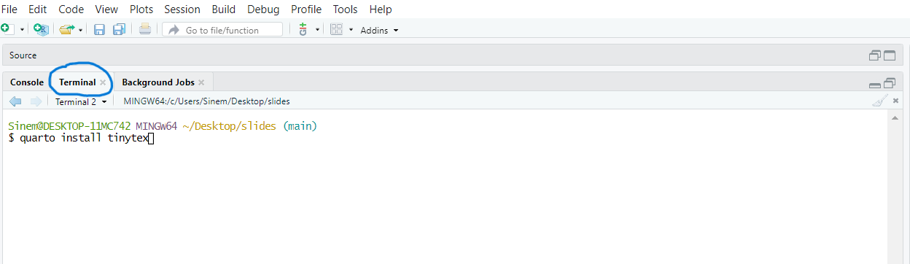Rendering a PDF Document
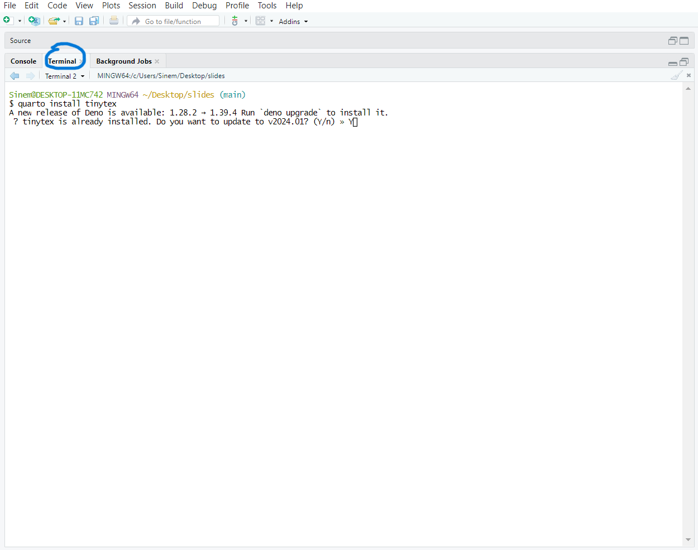Rendering a PDF Document
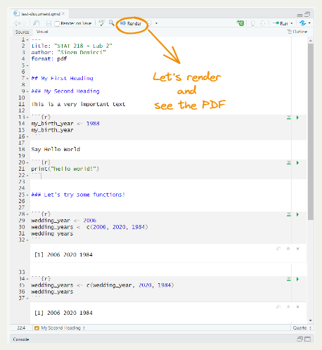Rendering a PDF Document
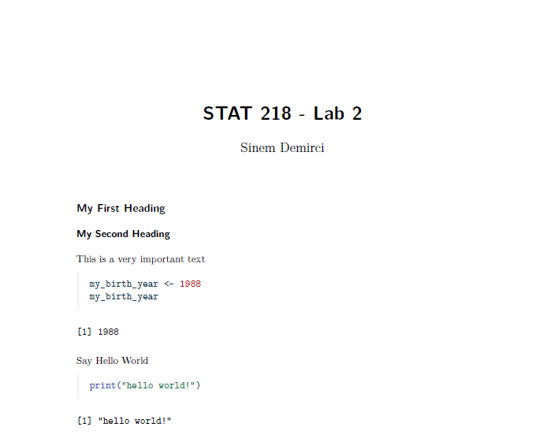Lab Assignment 0
Please upload this PDF document to our Canvas page as LAB Assignment 1 (Individual)
Begining from next week, we will start working in groups.
CONGRATULATIONS
Now, you can close your RStudio.
Everything you did is in your STAT 218 folder!